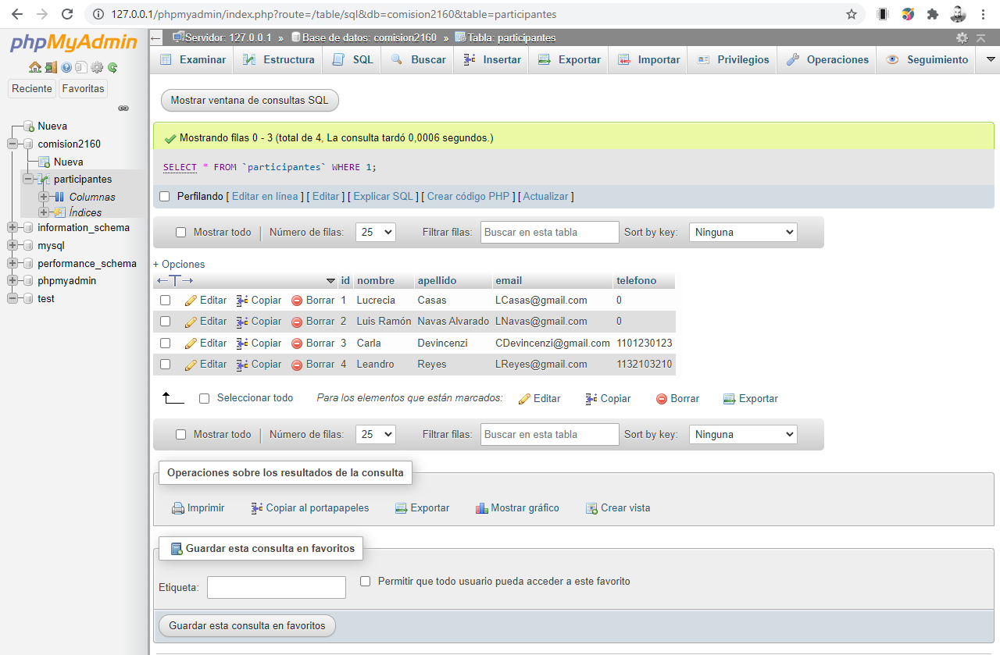

XAMPP
# HEROKU
# https://www.heroku.com/
# Tarea:
# - Crear una cuenta
# XAMPP para Windows 8.0.11
# XAMPP es una distribución de Apache fácil de instalar que contiene MariaDB, PHP y Perl.
# XAMPP es un paquete de software libre, que consiste principalmente en el sistema de gestión de bases de datos MySQL,
# el servidor web Apache y los intérpretes para lenguajes de script PHP y Perl.
# El nombre es en realidad un acrónimo:
# - X (para cualquiera de los diferentes sistemas operativos)
# - Apache (servidor web)
# - MariaDB (Desde la versión 5.6.15, XAMPP cambió MySQL por MariaDB, un fork de MySQL con licencia GPL)
# - PHP (lenguaje de programación creado por Rasmus Lerdorf en 1994)
# - Perl (lenguaje de programación diseñado por Larry Wall en 1987)
# https://www.apachefriends.org/es/download.html
# Start: Apache, MySQL
# http://127.0.0.1/phpmyadmin/

# Continuamos trabajamos en el repositorio Fork codoacodocomision2160
# Repositorio PROFE: https://github.com/luisNavasArg/codoacodocomision2160.git
# Repositorio FORK: https://github.com/lreyes-swdev/codoacodocomision2160.git
# Durante la clase...
cd "C:\workspace\Repositorios\codoacodocomision2160"
git status
git add *
git commit -m "XAMPP, Base de Datos, Tablas, Insert"
git push -u origin master
# Al finalizar la clase actualizo mi repositorio general
cd "C:\workspace\FullStack_JAVA#2160"
git status
git add *
git commit -m "Fin Clase 23"
git push -u origin master